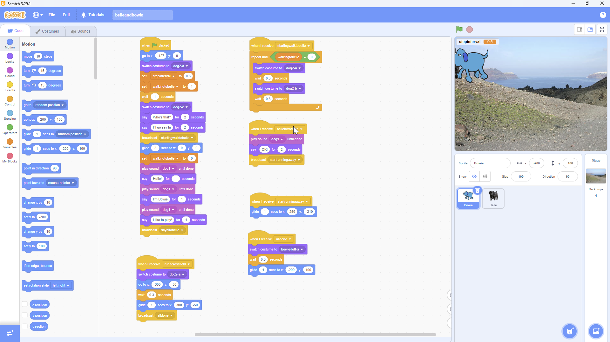

|
|
Scratch Project |
|
|
Scratch Project |
Using Scratch we programmed an animation that told a story. I decided to tell the story of our two dogs, Bowie and Belle.
Some of the things I learned during this exercise:
Here is the video. In it, Bowie says hi to Belle, and Belle runs away with her. This is something that actually happens, and they run across fields and mountains, and I swear they make that Jetsons flying-car sound doing so.
Coding with scratch is done with a visual editor and snapping blocks together. He is an image of the code for this project.

You can get the scratch project to play with this code by clicking on this button.